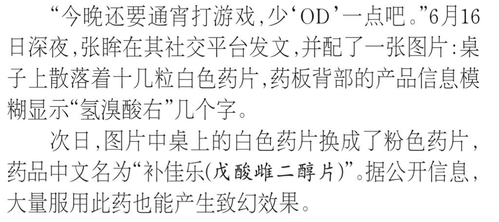

lovely水
@lovelyshuimao
@Takina_Jimato @Kagura_Yukikaze 所以国内官媒是将od和药娘强绑定了吗

Takina.JPN🍥🏳️⚧️
@Takina_Jimato
什么叫大量服用补佳乐也能产生致幻效果？你告诉我ERα、ERβ这种受体能和5-HT2A这种受体一样？
得罪了MTF暂且不说，这东西原本就属于妇科绝经期激素替代药物，超量服用也只会乳房胀痛、恶心呕吐、撤退出血、血栓风险
右美沙芬，作用于 NMDA受体，对人而非致幻，而是解离
本文来源于法治日报
#MTF https://t.co/N4KfuUeduJ